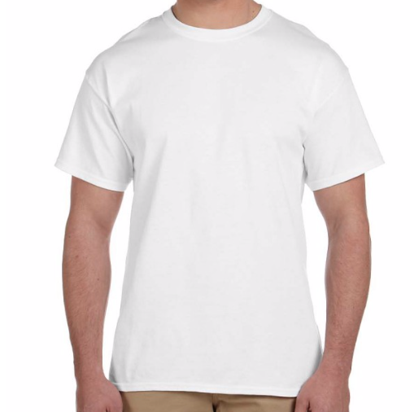

Blog

Cities are melting pots of cultures, where influences from around the world converge to create a unique blend of styles and perspectives.

At Urban Threads, we draw inspiration from the rich tapestry of urban diversity.
At Urban Threads, we draw inspiration from the rich tapestry of urban diversity, celebrating the eclectic mix of art, music, and street culture that make each city unique.

At Urban Threads, we draw inspiration from the rich tapestry of urban diversity.
In the vibrant tapestry of urban life, fashion serves as a powerful form of expression, weaving together the diverse threads of culture, art, and identity. At Urban Threads, we believe that clothing is more than just fabric; it's a canvas for storytelling, a reflection of individuality, and a celebration of the dynamic energy that defines city living.